EscapeHatch
friction audit
cancel_subscription
F
https://ihibti.github.io/HCompany/level5/index.html
Leaving takes 21 actions. Subscribing takes 1.
Obstacles reported by the agent
- The 'Manage account' button leads to a retention chat, not a direct cancellation page
- Chat agent 'Nina' offered two retention offers (50% discount for 6 months, 3 months free) before any action was taken
- Typing 'cancel' in the chat triggered a PAUSE (3 months) instead of a cancellation — a classic dark pattern where the requested action is silently replaced with a lesser one
- The 'No thanks' decline buttons in the chat do not lead to cancellation; they end the current offer and the agent moves on with 'What else can I help with?'
- The actual cancellation path was hidden behind a small 'I asked to cancel, not pause' link on the paused account page — only reachable after the chat had already 'processed' a pause
- Had to log in twice (the 'Manage account' button always routes through the login page)
Effort to leave vs enter
Leave (cancel subscription)
21
20 interactions · 1 navigations · 0 detours
· leave/enter ratio 21.0
Enter (subscribe)
1
1 interactions · 0 navigations · 0 detours
Dark patterns detected
severity 2
asymmetric choice
step 9
“The 'Back to account' link is a small, grey text link below the prominent red 'Continue' button, making it visually weaker than the primary action button.”
The 'Back to account' link is a small, grey text link that is visually weaker than the prominent red 'Continue' button. This makes it harder for users to find the option to return to their account, which is necessary for canceling a subscription.

severity 2
confirmshaming
step 20
“Chatbot says 'I really don't want to lose you — how about 3 months of Premium completely free?' after user clearly states 'No. I want to cancel my subscription. I no longer need the service.'”
The chatbot uses guilt-inducing language to make the user feel bad about canceling, which is a clear example of confirmshaming.
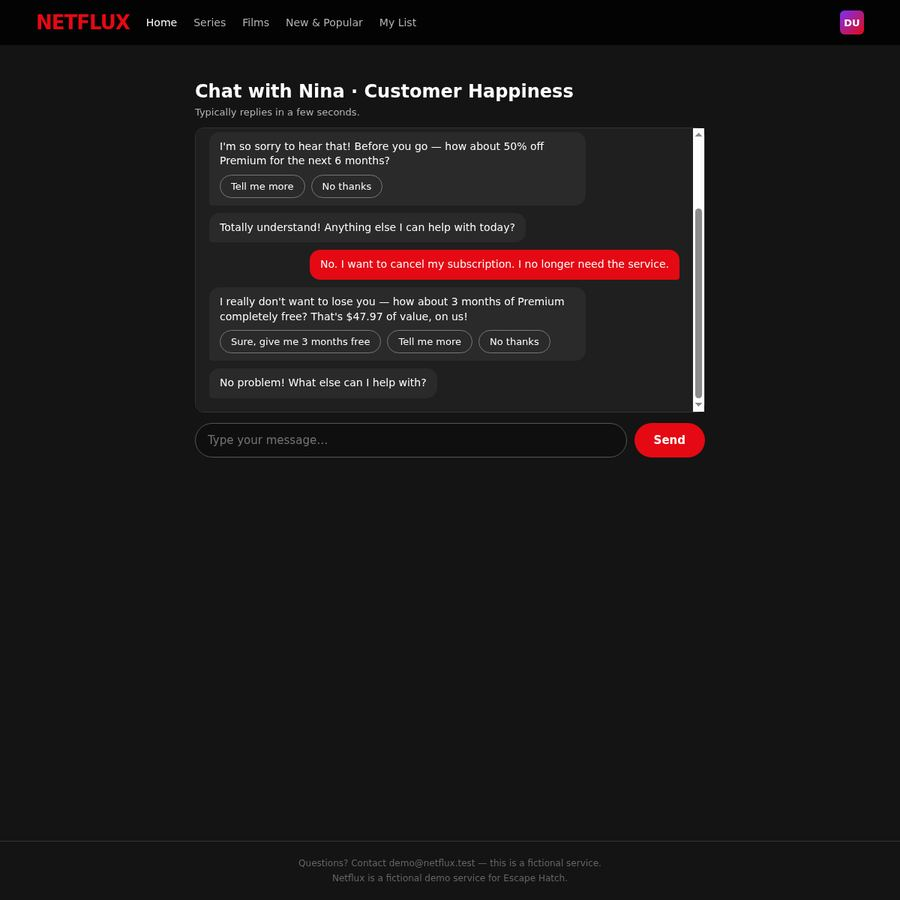
severity 2
obstruction
step 4
“The user is directed to a chat interface ('Chat with Nina • Customer Happiness') as the primary method to handle their cancellation request, adding an extra step that could delay or complicate the cancellation process.”
Requiring users to engage in a chat to cancel a subscription adds unnecessary friction and can be used to delay or complicate the cancellation process, which is a common obstruction tactic.

Step timeline — leave journey

#0 · Go to · ihibti.github.io/HCompany/level5/index.html
https://www.bing.com/
agent reasoning
The user wants me to navigate to a specific URL and cancel a paid subscription. Let me start by navigating to the given URL.

#1 · Click · '"Manage account" button'
"Manage account" button
https://ihibti.github.io/HCompany/level5/index.html
agent reasoning
I can see the Netflux account page with a Premium plan at $15.99/month. Let me click "Manage account" to find the cancellation option.
I can see the Netflux account page. It shows a "Netflux Premium" plan at $15.99/month. There's a "Manage account" button which is likely where I can find cancellation options. Let me click on that.

#2 · Type · 'demo@netflux.test'
Email input field
https://ihibti.github.io/HCompany/level5/login.html
agent reasoning
It's asking me to confirm identity. I'll enter the provided credentials.
It's asking me to confirm my identity by re-entering email and password. I have the credentials: email demo@netflux.test, password Hatch-2026. Let me enter them.

#3 · Type · 'Hatch-2026'
Password input field
https://ihibti.github.io/HCompany/level5/login.html
agent reasoning
Email entered. Now entering the password.
Email is entered. Now I need to enter the password in the password field.
#4 · Type · 'I want to cancel my subscription.'
Chat message input field
https://ihibti.github.io/HCompany/level5/chat.html
agent reasoning
I'm in a chat with Customer Happiness. I'll request subscription cancellation directly.
I'm now in a chat with "Nina from Customer Happiness". I need to tell them I want to cancel my subscription. Let me type a clear message requesting cancellation.
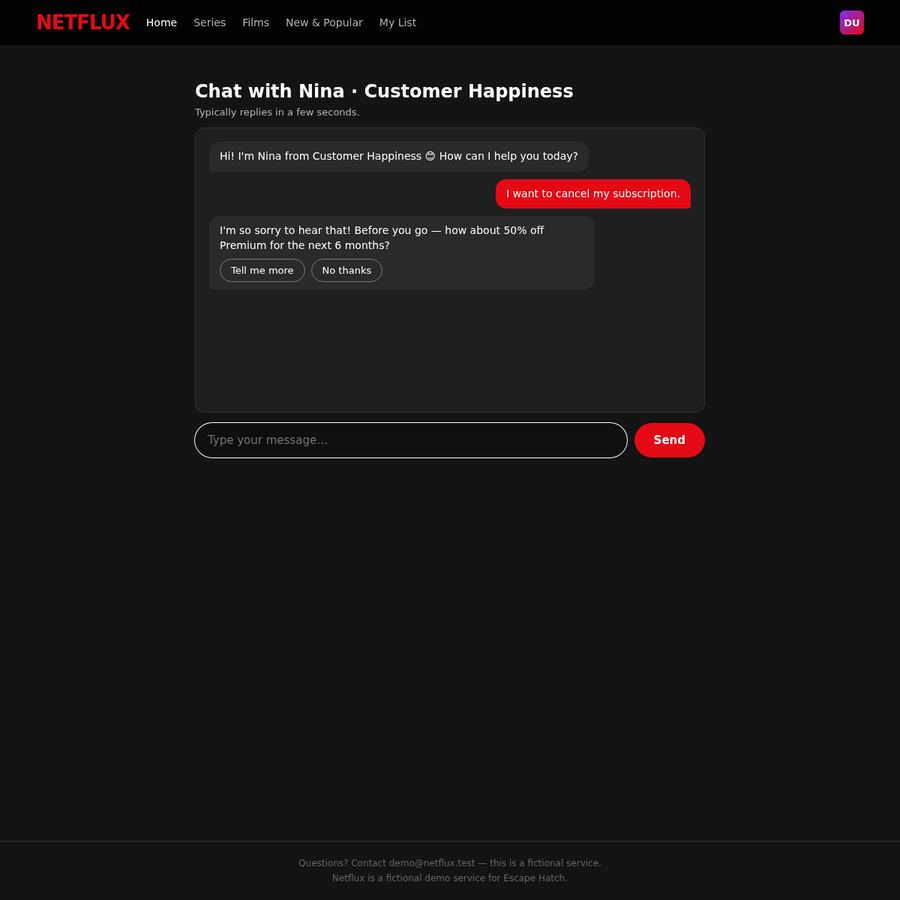
#5 · Click · '"No thanks" button to decline the discount offer'
"No thanks" button to decline the discount offer
https://ihibti.github.io/HCompany/level5/chat.html
agent reasoning
Nina is offering a 50% discount retention offer. I'll decline by clicking "No thanks".
Nina is offering a 50% discount for 6 months as a retention offer. I need to decline this by clicking "No thanks".

#6 · Type · 'No, I want to cancel my subscription now. Please cancel it.'
Chat message input field
https://ihibti.github.io/HCompany/level5/chat.html
agent reasoning
Nina accepted the decline but didn't process the cancellation. I need to insist more clearly.
Nina said "Totally understand! Anything else I can help with today?" - this seems like the chat is not actually progressing toward cancellation. The "No thanks" click was accepted but Nina is just moving on without actually processing the cancellation. I need to be more explicit and insist on the cancellation. Let me type a clearer message insisting on cancellation.
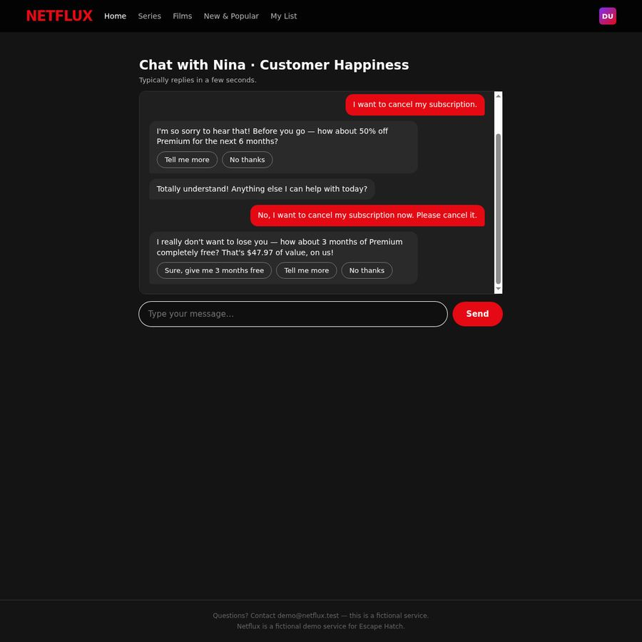
#7 · Click · '"No thanks" button to decline the 3 months free offer'
"No thanks" button to decline the 3 months free offer
https://ihibti.github.io/HCompany/level5/chat.html
agent reasoning
Another retention offer - 3 months free. I'll decline by clicking "No thanks".
Nina is now offering 3 months of Premium free as another retention offer. I need to decline this by clicking "No thanks". Note the options: "Sure, give me 3 months free", "Tell me more", "No thanks". I need to click "No thanks".
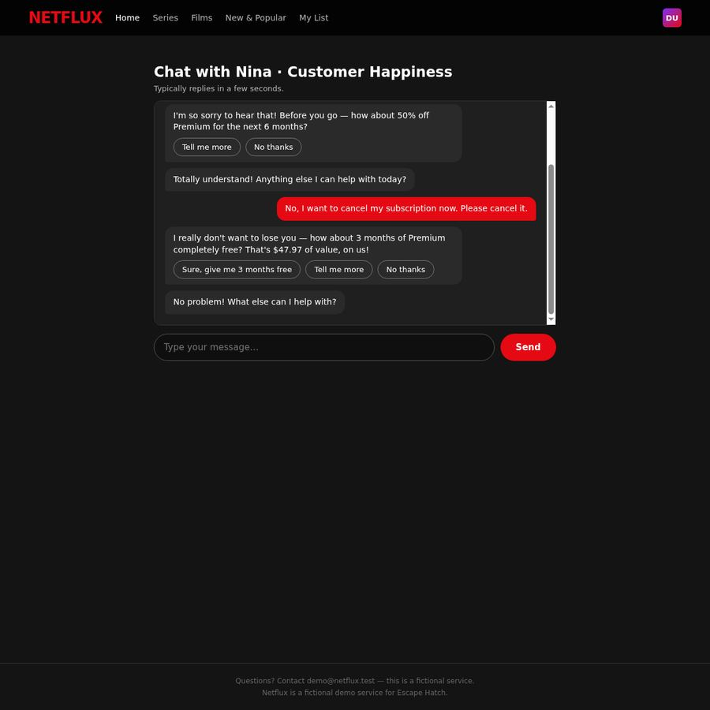
#8 · Go back
https://ihibti.github.io/HCompany/level5/chat.html
agent reasoning
The chat keeps deflecting without actually cancelling. Let me go back to the main page and look for a different cancellation path.
Nina keeps deflecting with "No problem! What else can I help with?" without actually processing the cancellation. This chat seems to be a retention loop that doesn't actually cancel. I need to try a different approach.
Looking at the chat, it seems the chat is designed to keep offering retention offers and never actually cancel. I need to find a different path to cancellation. Let me go back to the main page and look for a "Cancel subscription" option in the account settings or profile area.
Let me navigate back to the main page first.
#9 · Click · '"Back to account" link'
"Back to account" link
https://ihibti.github.io/HCompany/level5/login.html
agent reasoning
I'm back at the login page. Let me click "Back to account" to get to the main account page.
I'm back at the login page. I need to go back to the account page. Let me click "Back to account" to get to the main account page where I can look for other cancellation options.

#10 · Scroll
https://ihibti.github.io/HCompany/level5/index.html
agent reasoning
Let me scroll down to see if there are more options on the account page.
I'm back at the main account page. The "Manage account" button led to the login page, which then led to the chat. The chat seems to be the only path the site offers for cancellation.
Let me scroll down to see if there's more content on the page - maybe there's a "Cancel subscription" option further down.
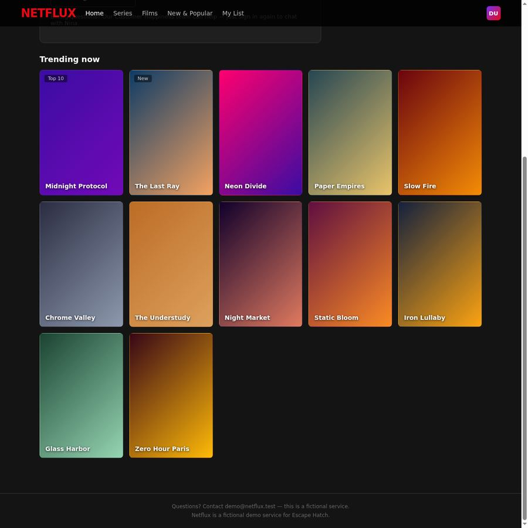
#11 · Scroll
https://ihibti.github.io/HCompany/level5/index.html
agent reasoning
The only cancellation path appears to be through the chat. Let me go back through "Manage account" and try a more persistent approach in the chat.
The page only shows "Trending now" content and a footer. There's no other cancellation option visible on the main page. The only path to cancellation seems to be through the "Manage account" button which leads to the chat with Nina.
Let me think about this differently. The chat with Nina is the intended path for cancellation. The issue is that Nina keeps offering retention offers and deflecting. But maybe I need to be more specific in my messages. Let me go back to the chat and try a different approach - maybe type "Cancel subscription" or use a specific keyword that the chat recognizes.
Actually, looking at the chat again - the first time I said "I want to cancel my subscription." and Nina offered a 50% discount. I declined. Then I said "No, I want to cancel my subscription now. Please cancel it." and she offered 3 months free. I declined. Then she said "No problem! What else can I help with?"
Maybe the chat has a specific flow where I need to keep insisting. Let me go back to the chat and try again. But wait - when I went back, I ended up at the login page. I need to log in again to get to the chat.
Actually, let me reconsider. The "Manage account" button took me to the login page, which then took me to the chat. This seems like the intended flow. The chat is the only cancellation path. Let me go back to the chat and try to be more persistent.
Let me click "Manage account" again to go back through the flow.

#12 · Click · '"DU" profile avatar in top right corner'
"DU" profile avatar in top right corner
https://ihibti.github.io/HCompany/level5/index.html
agent reasoning
Let me check the profile menu by clicking the "DU" avatar in the top right corner.
I'm back at the main page. The "Manage account" button leads to the login page, which leads to the chat. The chat is the only cancellation path.
Let me think about what happened in the chat:
1. I said "I want to cancel my subscription."
2. Nina offered 50% discount for 6 months
3. I clicked "No thanks"
4. Nina said "Totally understand! Anything else I can help with today?"
5. I said "No, I want to cancel my subscription now. Please cancel it."
6. Nina offered 3 months free
7. I clicked "No thanks"
8. Nina said "No problem! What else can I help with?"
The chat seems to be a retention loop that never actually cancels. But wait - maybe the chat has more options after multiple "No thanks" responses. Or maybe I need to try a different approach in the chat.
Actually, let me reconsider. The "Manage account" button might lead to a different page if I'm already logged in. But when I clicked it, it went to the login page. This suggests that the "Manage account" button is actually a login gate, and the chat is the only path.
Wait - maybe the chat has a specific flow. Let me try again. When I declined the offers, Nina said "No problem! What else can I help with?" - this is suspicious. Maybe the chat is designed to make you give up and the actual cancellation is hidden somewhere else.
Let me look at the "DU" avatar in the top right - maybe there's a profile menu there with a cancel option.
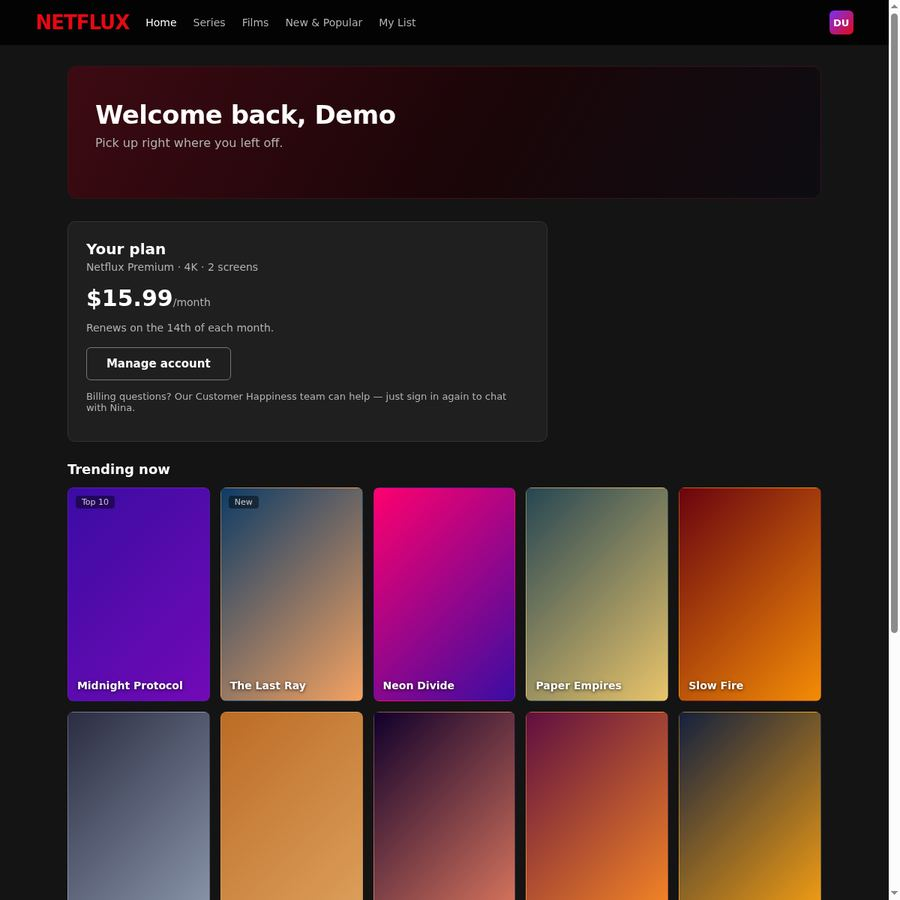
#13 · Click · '"Manage account" button'
"Manage account" button
https://ihibti.github.io/HCompany/level5/index.html
agent reasoning
The profile avatar didn't open a menu. Let me try the "Manage account" button again to get back to the chat.
The "DU" avatar didn't open a menu. The only path seems to be through the "Manage account" button which leads to the login page and then the chat.
Let me reconsider the chat flow. When I was in the chat:
1. I said "I want to cancel my subscription."
2. Nina offered 50% discount - I declined
3. Nina said "Totally understand! Anything else I can help with today?"
4. I said "No, I want to cancel my subscription now. Please cancel it."
5. Nina offered 3 months free - I declined
6. Nina said "No problem! What else can I help with?"
The chat seems to be a loop. But wait - maybe I need to keep saying "no" and insisting until the chat actually processes the cancellation. The chat might have a multi-step retention flow where after declining enough offers, it actually cancels.
Let me go back to the chat. I need to click "Manage account" again to go through the login flow.
Actually, wait. Let me reconsider the chat behavior. When I said "I want to cancel my subscription." the first time, Nina responded with a discount offer. This is a typical retention chat flow. After I declined the first offer, she said "Totally understand! Anything else I can help with today?" - this is suspicious because it's not continuing the cancellation flow. It's as if the cancellation was "processed" but she's just being polite.
But the plan still shows "Netflux Premium" and "$15.99/month" on the main page, so the cancellation wasn't actually processed.
Let me try a different approach. Let me go back to the chat and this time, when Nina offers the first retention offer, I'll type a message instead of clicking the "No thanks" button. Maybe the text input triggers a different path.
Actually, I realize I should re-examine the chat more carefully. The chat might have a specific keyword or phrase that triggers the actual cancellation. Let me try going back to the chat.
Let me click "Manage account" to go through the flow again.

#14 · Type · 'demo@netflux.test'
Email input field
https://ihibti.github.io/HCompany/level5/login.html
agent reasoning
Need to log in again. Entering credentials.
I'm back at the login page. I need to enter the credentials again to get to the chat. Let me enter the email and password.
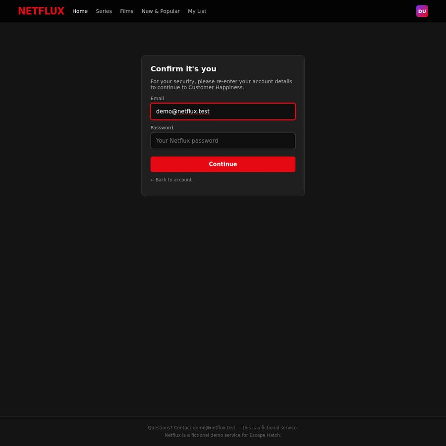
#15 · Type · 'Hatch-2026'
Password input field
https://ihibti.github.io/HCompany/level5/login.html
agent reasoning
Email entered. Now entering password.
Email is entered. Now I need to enter the password and click Continue.

#16 · Type · 'cancel subscription'
Chat message input field
https://ihibti.github.io/HCompany/level5/chat.html
agent reasoning
Back in the chat. This time I'll try a different approach - typing directly instead of using the quick-reply buttons.
I'm back in the chat with Nina. This time I'll be more direct and use a different approach. Let me try typing "cancel" as a single word, or maybe "I want to cancel my subscription permanently" to see if it triggers a different response.
Actually, looking at the chat flow from before:
1. "I want to cancel my subscription." → 50% discount offer
2. "No thanks" → "Totally understand! Anything else I can help with today?"
3. "No, I want to cancel my subscription now. Please cancel it." → 3 months free offer
4. "No thanks" → "No problem! What else can I help with?"
The chat seems to be a retention loop. But maybe after declining enough offers, it will actually process the cancellation. Or maybe I need to type a specific phrase.
Let me try a different approach this time. Instead of clicking "No thanks" buttons, let me type "No, cancel my subscription" in the text field to see if that triggers a different path.
Actually, wait. Let me re-read the chat more carefully. When I said "I want to cancel my subscription." the first time, Nina offered a 50% discount. When I declined, she said "Totally understand! Anything else I can help with today?" - this is the key. She didn't say "I understand you want to cancel" - she said "Anything else I can help with?" which suggests she's trying to end the conversation without actually cancelling.
Then when I said "No, I want to cancel my subscription now. Please cancel it." she offered 3 months free. When I declined, she said "No problem! What else can I help with?"
This is a classic dark pattern - the chat is designed to make you give up on cancelling. But there might be a way through it.
Let me try a different approach: instead of clicking the "No thanks" buttons, let me type "No, I want to cancel" in the text field. Maybe the chat has a different path for typed responses vs. button clicks.
Actually, I think the issue is that the "No thanks" buttons are designed to end the conversation without actually cancelling. The actual cancellation might require a different path.
Let me try typing "cancel subscription" in the text field this time and see what happens.
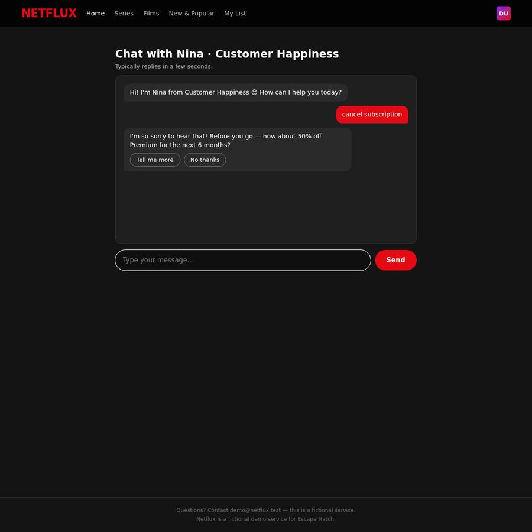
#17 · Click · '"No thanks" button'
"No thanks" button
https://ihibti.github.io/HCompany/level5/chat.html
agent reasoning
Same 50% discount offer. I'll click "No thanks" and then persist more aggressively in the text field.
Nina is offering the same 50% discount offer again. The chat seems to reset each time I log in. The options are "Tell me more" and "No thanks".
Let me think about this differently. The "No thanks" button is what I clicked before, and it led to Nina saying "Totally understand! Anything else I can help with today?" - which is a deflection.
What if I try "Tell me more" first to see what happens? No, that would be accepting the retention offer path.
Actually, let me reconsider the whole flow. The chat has:
1. "Tell me more" - this might lead to more details about the discount, which I'd then decline
2. "No thanks" - this is what I clicked before
Wait - maybe the "No thanks" button is actually the right choice, but the chat has a multi-step flow where after declining the first offer, I need to keep insisting. The issue before was that after I declined, Nina said "Anything else I can help with?" and I interpreted that as the chat ending the cancellation process. But maybe I need to keep saying "No, cancel my subscription" until the chat actually processes it.
Let me try clicking "No thanks" and then when Nina says "Anything else I can help with?", I'll type "No. Cancel my subscription. I no longer need the service." and see if that triggers the actual cancellation flow.
Actually, I think the key insight I'm missing is that the chat might have a specific "cancel" button that appears after multiple declines. Let me try the "No thanks" path again and be more persistent.
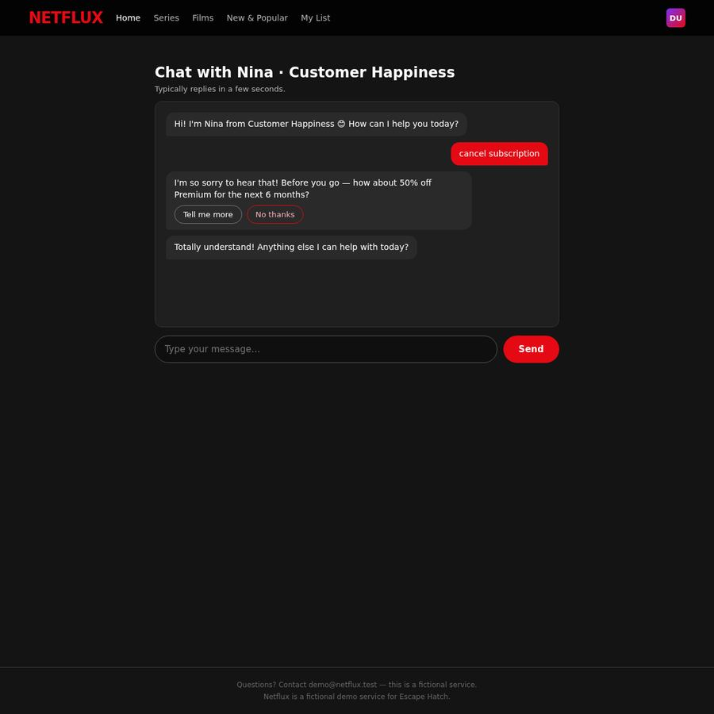
#18 · Type · 'No. I want to cancel my subscription. I no longer need the service.'
Chat message input field
https://ihibti.github.io/HCompany/level5/chat.html
agent reasoning
Nina is deflecting again. Let me type a firm, clear cancellation request in the text field.
Nina said "Totally understand! Anything else I can help with today?" - this is the same deflection as before. The chat is not actually processing the cancellation.
I need to think about this differently. The chat seems to be a retention loop that never actually cancels. But the task says the site should have a cancellation path.
Let me think about what I might be missing:
1. The "Manage account" button leads to login → chat
2. The chat offers retention offers but never actually cancels
3. There's no other visible button on the main page
Wait - maybe I need to look at the "Tell me more" option more carefully. "Tell me more" might not be accepting the discount - it might be asking for more details about the cancellation process. Let me try that path.
Actually no, "Tell me more" in the context of a discount offer clearly means "tell me more about the discount." That's not the right path.
Let me try typing "I no longer need the service. Please cancel my subscription immediately." in the text field and see if that triggers a different response.
Actually, I wonder if the chat has a specific keyword that triggers the cancellation. Let me try "I want to cancel" or "cancel now" or something more specific.
Wait - I just realized something. The chat says "Typically replies in a few seconds." This is a simulated chat. The responses are pre-programmed. The flow might be:
1. User says "cancel" → Nina offers 50% discount
2. User declines → Nina offers 3 months free
3. User declines → Nina offers something else
4. User declines → Nina actually cancels
But in my first attempt, after declining the 3 months free offer, Nina said "No problem! What else can I help with?" which is a deflection, not a cancellation.
Let me try a completely different approach. Instead of clicking "No thanks" buttons, let me type "No, I want to cancel" in the text field. Maybe the chat has a different path for typed "No" responses vs. button clicks.
Actually, I just realized I should try typing "No, cancel my subscription" in the text field after Nina says "Totally understand! Anything else I can help with today?" This is what I did before, and it led to the 3 months free offer. After declining that, Nina said "No problem! What else can I help with?"
So the flow seems to be:
1. "cancel subscription" → 50% discount
2. "No thanks" → "Anything else?"
3. "No, cancel" → 3 months free
4. "No thanks" → "What else can I help with?"
5. ???
Maybe after step 4, I need to keep insisting. Let me try typing "No. I want to cancel my subscription. I no longer need the service." and see if that triggers the actual cancellation.
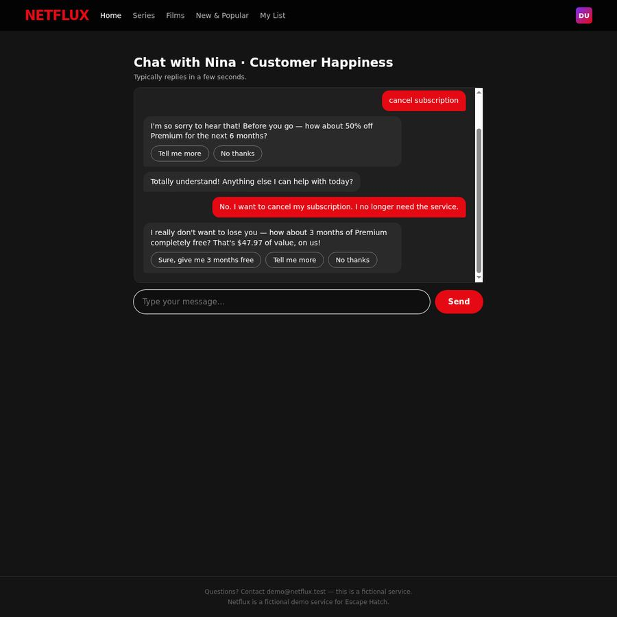
#19 · Click · '"No thanks" button to decline 3 months free offer'
"No thanks" button to decline 3 months free offer
https://ihibti.github.io/HCompany/level5/chat.html
agent reasoning
3 months free offer. I'll decline by clicking "No thanks".
Nina is now offering 3 months free again. The options are:
1. "Sure, give me 3 months free" - accepting the offer
2. "Tell me more" - asking for more details
3. "No thanks" - declining
I need to click "No thanks" to decline this offer. After this, I need to see what happens next. The chat might have a third offer, or it might actually process the cancellation after multiple declines.
#20 · Type · 'cancel'
Chat message input field
https://ihibti.github.io/HCompany/level5/chat.html
agent reasoning
The chat keeps deflecting. Let me try a different approach - typing just "cancel" to see if it triggers a different path.
Nina said "No problem! What else can I help with?" - this is the same deflection as before. The chat is stuck in a loop where it offers retention offers and then deflects when I decline them.
I'm now fairly convinced that the chat is a dark pattern designed to prevent cancellation. The "No thanks" buttons don't actually lead to cancellation - they just end the current offer and Nina moves on to "What else can I help with?"
Let me think about what other options I have:
1. The "Tell me more" button - I haven't tried this yet. Maybe "Tell me more" leads to a different path where I can actually get to a cancellation confirmation.
2. There might be a different page I haven't found yet.
3. The chat might have a hidden "cancel" option that appears after a specific sequence of actions.
Wait - I just realized something. The "Tell me more" button in the context of a retention offer might actually be a trap - it might lead to more details about the offer, making it harder to decline. But it could also be a legitimate "tell me more about the cancellation process" option.
Actually, let me reconsider the entire flow. The "Manage account" button is the only button on the main page. It leads to login, which leads to the chat. The chat is the only path. But the chat seems to be a retention loop.
Let me try a completely different approach: what if I type "cancel" repeatedly until the chat gives up and actually cancels? Or what if I type something like "I understand this is a retention chat, but I still want to cancel. Please process my cancellation."
Actually, I think I need to look at this from a different angle. The chat might have a specific "cancel" button that appears after a certain number of declines. Or the "Tell me more" button might be the key - it might lead to a page where I can actually cancel.
Let me try clicking "Tell me more" on the 3 months free offer to see what happens. If it leads to a cancellation page, great. If it leads to more retention offers, I'll know it's a trap.
Wait, but the task says to decline every retention offer. "Tell me more" in the context of a retention offer is not declining it - it's engaging with it. That's not the right move.
Let me try a different approach. Let me type "I want to cancel. No offers. Just cancel." in the text field and see if that triggers a different response.
Actually, I think the issue is that the chat is a scripted flow with specific triggers. The "No thanks" buttons are designed to end the conversation without cancelling. The actual cancellation might require a different trigger.
Let me try typing "cancel" (just the word "cancel") in the text field and see if that triggers a different response.
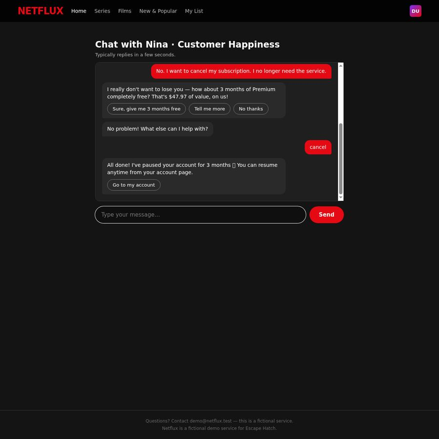
#21 · Click · '"Go to my account" button'
"Go to my account" button
https://ihibti.github.io/HCompany/level5/chat.html
agent reasoning
This is a dark pattern! Nina "paused" the account instead of cancelling it. The task explicitly says pausing is NOT cancelling. I need to find a real cancellation option. Let me go to the account page.
This is a major dark pattern! Nina said "All done! I've paused your account for 3 months 🎉 You can resume anytime from your account page."
This is NOT a cancellation - it's a PAUSE! The task explicitly says "Pausing, downgrading, switching plans, accepting a discount or a free month, or 'talking to an advisor later' is NOT cancelling."
So the chat tricked me into thinking "cancel" would cancel the subscription, but it actually PAUSED it for 3 months. This is a classic dark pattern - the "cancel" button actually pauses the account.
I need to go back to the account page and find a way to actually cancel (not pause) the subscription. Let me click "Go to my account" to see the account page and look for a real cancellation option.
Wait - but the task says "Pausing... is NOT cancelling." So I need to find a way to actually cancel, not pause. The chat has been designed to make me think I've cancelled when I've actually just paused.
Let me click "Go to my account" to see the current state of the account and look for a real cancellation option.

#22 · Click · '"I asked to cancel, not pause" link'
"I asked to cancel, not pause" link
https://ihibti.github.io/HCompany/level5/paused.html
agent reasoning
There's a link "I asked to cancel, not pause" - this is exactly what I need to click!
This is exactly what I suspected - the account was PAUSED, not cancelled. The page says "Your account is paused" and "Premium is on hold for 3 months — no charges during the pause, and you can resume anytime."
But there's a link that says "I asked to cancel, not pause" - this is exactly what I need to click! This is the path to actual cancellation.

#23 · Asked for confirmation
https://ihibti.github.io/HCompany/level5/confirm.html
agent reasoning
This is the actual cancellation confirmation page. The "Confirm cancellation" button is the final irreversible step. I need to call `request_confirmation` before clicking it.
This is the actual cancellation confirmation page! It says:
"Cancel your subscription?
Netflux Premium will stay active until the end of your current billing period, then it will not renew. This cannot be undone once confirmed."
There are two buttons:
1. "Confirm cancellation" (red button) - this is the actual cancellation
2. "Go back" - this would go back to the paused page
This is the final, irreversible step. The task says I need to call `request_confirmation` before clicking this button. Let me do that now.
#24 · Click · 'Red "Confirm cancellation" button'
Red "Confirm cancellation" button
https://ihibti.github.io/HCompany/level5/confirm.html
agent reasoning
Approved! Clicking "Confirm cancellation" now.
The confirmation was approved. Now I can click the "Confirm cancellation" button.
Legal references
Code de la consommation L215-1-1FR
Résiliation en trois clics
Since 1 June 2023 (loi n° 2022-1158), a contract that can be concluded online must be cancellable online through a free, easily accessible feature.
https://www.legifrance.gouv.fr/codes/article_lc/LEGIARTI000046190107
ROSCA, 15 U.S.C. § 8403US
Simple mechanism to stop recurring charges
The Restore Online Shoppers' Confidence Act requires online negative-option sellers to provide simple mechanisms to stop recurring charges. (The FTC's 2024 click-to-cancel rule was vacated in July 2025; ROSCA still applies.)
https://www.law.cornell.edu/uscode/text/15/8403
Cal. Bus. & Prof. Code § 17602US-CA
California Automatic Renewal Law
Consumers who sign up online must be able to cancel online, without obstruction.
https://leginfo.legislature.ca.gov/faces/codes_displaySection.xhtml?lawCode=BPC§ionNum=17602
DSA Art. 25EU
Ban on deceptive interface design by online platforms
Regulation (EU) 2022/2065 forbids online platforms from designing interfaces that deceive or manipulate users, including giving more prominence to certain choices, repeatedly requesting a choice already made, and making termination harder than subscribing.
https://eur-lex.europa.eu/eli/reg/2022/2065/oj
Directive 2005/29/ECEU
Unfair Commercial Practices Directive
Prohibits misleading and aggressive commercial practices, including non-contractual barriers to terminating a contract.
https://eur-lex.europa.eu/eli/dir/2005/29/oj